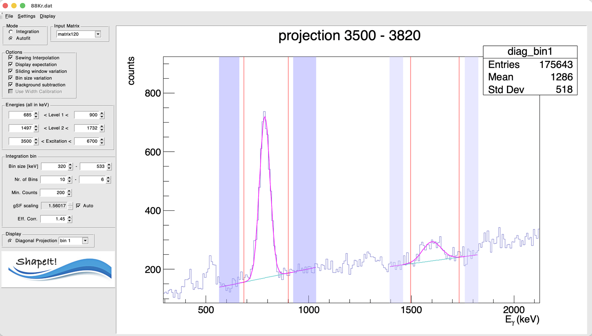

2. Defining the two levels¶
The key idea: diagonals, not γ-ray windows¶
A primary γ ray that de-excites the quasicontinuum directly into a specific low-lying final level \(L_j\) obeys \(E_x = E_\gamma + E_{Lj}\) — so in the \((E_\gamma, E_x)\) matrix, all such transitions lie on a diagonal line, regardless of which excitation-energy bin they started from. Equivalently, along that diagonal, \(E_x - E_\gamma = E_{Lj}\) is constant.
This is why ShapeIt can work with two simple energy windows instead of two diagonal cuts: it internally re-bins the matrix onto an \((E_x - E_\gamma)\) vs. \(E_x\) grid, where each diagonal collapses to a vertical line at \(E_x - E_\gamma = E_{Lj}\) — i.e. at the (fixed) energy of the fed level itself.

Figure — Diagonals \(D_1\) and \(D_2\) in the \((E_\gamma, E_x)\) matrix, corresponding to two known final levels (e.g. the \(2^+_1\) and \(2^+_2\) states in an even–even nucleus). For a given excitation-energy bin (grey band), the crossing points with \(D_1\) and \(D_2\) give a pair of γ-ray energies, \(E_\gamma^{(1)} = E_x - E_{f1}\) and \(E_\gamma^{(2)} = E_x - E_{f2}\).
Setting the level windows¶
In the Energies (all in keV) panel:
| Field | Meaning |
|---|---|
| Level 1 (low – high) | Window on the Ex − Eγ axis bracketing the first final level's energy, \(E_{L1}\) |
| Level 2 (low – high) | Window on the Ex − Eγ axis bracketing the second final level's energy, \(E_{L2}\) |
| Excitation (low – high) | The Ex range over which to step through excitation-energy bins |
\(L_1\) and \(L_2\) are typically the two lowest, best-resolved discrete states below the level density in your nucleus — in even–even nuclei, conveniently the first two \(2^+\) states. The default values in a fresh session are just placeholders from a previous analysis — replace them with the known energies of the two final levels relevant to your nucleus.
How to pick good windows
Use Display → Diag vs Excitation energy to view the matrix re-binned onto the \((E_x-E_\gamma)\) vs. \(E_x\) grid described above. Your two chosen levels should appear as two clear vertical lines; set the Level 1 / Level 2 windows to bracket each line with a small margin.
For each excitation-energy bin¶
Once the two level windows are set, ShapeIt will, for every excitation-energy bin:
- project that bin onto the \((E_x-E_\gamma)\) axis,
- fit or integrate the two peaks at \(E_{L1}\) and \(E_{L2}\),
- form the ratio of their (background-subtracted) intensities — which, after the \(E_\gamma^3\) correction, is the ratio of the γSF at the two corresponding γ-ray energies \(E_\gamma^{(1)} = E_x - E_{L1}\) and \(E_\gamma^{(2)} = E_x - E_{L2}\) (see The algorithm).
Repeating this across all excitation-energy bins gives a series of internally-normalized γSF pairs, which are then sewn together — see Choosing mode and binning for how the bins are set up, and The algorithm for the sewing itself.
Peak and background markers¶
Once you run a fit (see Running ShapeIt and reading results) with Autofit mode and Background subtraction enabled, the per-bin projection display shows draggable markers directly on the plot — this is the actual way to fine-tune peak and background windows, rather than typing numbers into a settings file.

A single excitation-energy bin's projection (3500–3820 keV here), in Autofit mode with background subtraction on. Level 1's peak (left) and Level 2's peak (right) are each fit with a Gaussian on a linear background (magenta curve); the cyan segment under each peak is the fitted background itself.
- Red vertical lines mark each peak's integration/fit window (its low and high edge) — these correspond to the Level 1 / Level 2 number fields in the Energies panel. Dragging a red line with the mouse updates that window directly (equivalent to editing the corresponding number field).
- Shaded bands mark the two background windows flanking each peak — darker purple for Level 1's background regions, lighter purple for Level 2's. Each band has a left and right edge you can drag independently, giving four adjustable markers per level in total.
Tip
Dragging markers is the normal way to adjust these windows. The
underlying values (bg_level1, bg_level2 in the
settings file) can also be hand-edited in a text
editor, but if you do that, you need Settings → Load Settings to
re-read the file before it takes effect — there's rarely a reason to
prefer this over just dragging the markers.
Background regions¶
Each level has two background windows (one below, one above the peak,
on the same Ex − Eγ axis) used for background subtraction and for the peak
fit in Autofit mode. They're saved/reloaded through the
settings file under the keys bg_level1 and
bg_level2, each with four numbers: low1 high1 low2 high2.
You can check the currently active values at any time via Settings → Print Settings to terminal.
Fitting a peak as a doublet¶
Sometimes a level's peak sits right next to a contaminant — most commonly a first-escape peak about 511 keV away (from pair-production escape) — that you want to fit simultaneously so it doesn't distort the peak of interest. ShapeIt supports this by fitting either level as a doublet: a second Gaussian added alongside the main one.
This option is not exposed in the GUI — it's the one case where you do need to hand-edit the settings file. To fit a doublet:
- Open your settings file in a text editor.
- Set the
level1_2(for Level 1) and/orlevel2_2(for Level 2) key to the low and high edges of the second peak's window, on the same Ex − Eγ axis as the main level windows. Leave a key at0 0for a single (non-doublet) peak. - Save the file, then in ShapeIt use Settings → Load Settings to re-read it — hand edits don't take effect until you reload.
When a doublet is active, the two components are fit with the same width; only the second component's amplitude and centroid are independently fit. The intensity that enters the strength ratio is still just the main peak's — the second component only serves to model the contaminant so it doesn't bias the fit.
Next: Choosing mode and binning.